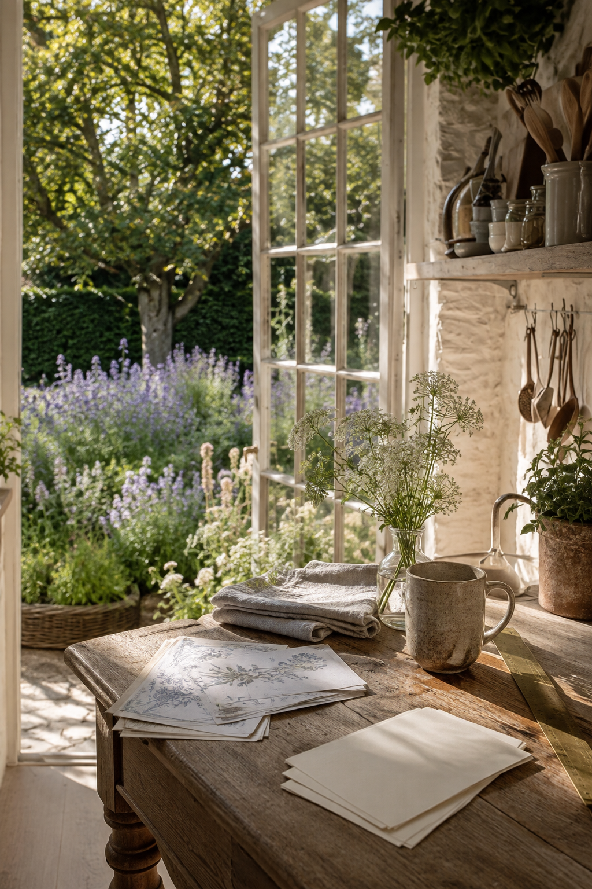
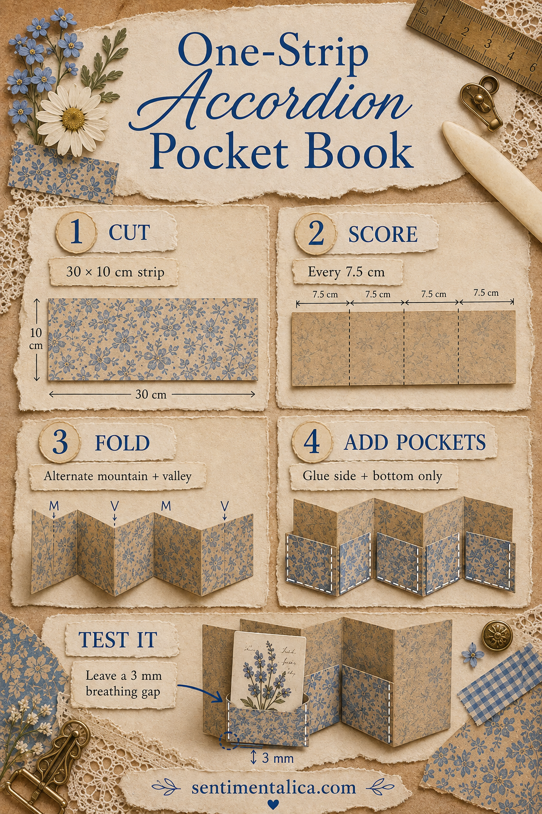
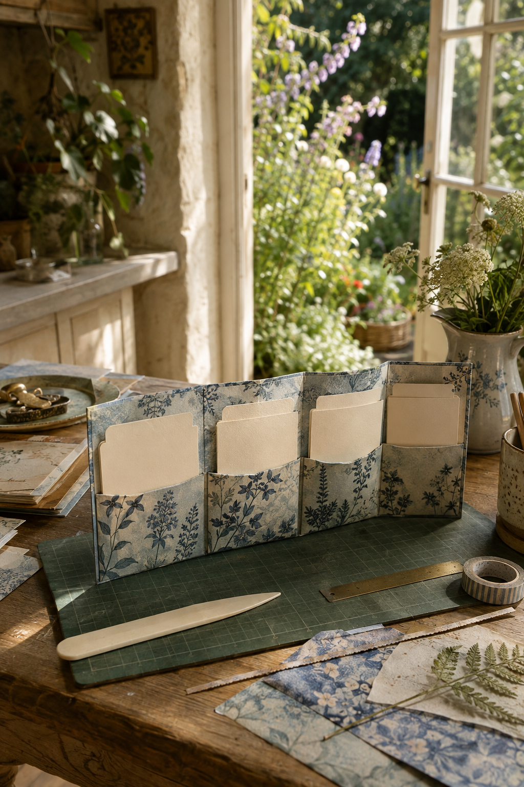

An accordion pocket book is one of those small constructions that looks elaborate but is really just careful measuring. There is no sewing and no complicated template. One long strip becomes the structure; four smaller rectangles become the pockets.
Use it inside a junk journal, tuck it into a gift, or keep it loose as a tiny collection for photographs, color swatches, seed packets, or handwritten observations.

Choose paper that wants to fold
For the accordion, use paper around 120–180 gsm. Thin copy paper collapses when the pockets are filled, while heavy cardstock fights the folds. A double-sided pattern is lovely but not required; the reverse can be covered later with scraps.
Cut one strip 30 × 10 cm. Cut four pocket pieces about 7 × 5 cm. If your inserts are larger, change the measurements while keeping every accordion panel equal.
Score before you fold
Along the 30 cm edge, mark 7.5, 15, and 22.5 cm. Score all three lines with a ruler and bone folder. Scoring compresses the fibers and gives the fold somewhere to go, which prevents the pale broken edge that often appears on printed cardstock.
Now alternate the folds: mountain, valley, mountain. Viewed from above, the strip should form a neat W. If it twists, flatten it and refold one crease in the opposite direction.

Build pockets that release the cards
Decorate or round the top edge of each pocket before attaching it. Apply a very thin line of glue only along the sides and bottom. Keep adhesive at least 3 mm away from the interior edge; glue spreads when pressed.
Center one pocket on each panel and press from bottom to top. Slip a scrap card inside while the glue is still workable, then remove it. This quick test reveals tight corners before they become permanent.
Check the breathing space
Your insert should be 3–5 mm narrower than the pocket opening. That tiny difference matters. A card that fits exactly when empty will snag after the pocket carries two layers or the room becomes humid.

Give the little book a purpose
The most satisfying accordion books have a simple rule. Try one card per season, one color family per pocket, four photographs from one walk, or a tiny story split into four scenes. Repeating the card size makes mixed scraps feel like a collection.
To close the book, wrap it with loose ribbon or make a belly band from a 2 cm paper strip. Do not glue the band to the accordion. The pockets need freedom to expand, and a removable closure is easier to replace later.
Before filling it, stand the book open for a few minutes. The folds should sit evenly and the pockets should not pull the panels forward. If one panel leans, sharpen only that crease. Over-burnishing every fold can make the structure stiff.
This is also a useful practice piece for larger interactive journals: it teaches accurate scoring, alternating folds, restrained glue, and allowance for bulk in one forgiving project.
Find more approachable paper ideas in the Sentimentalica journal.